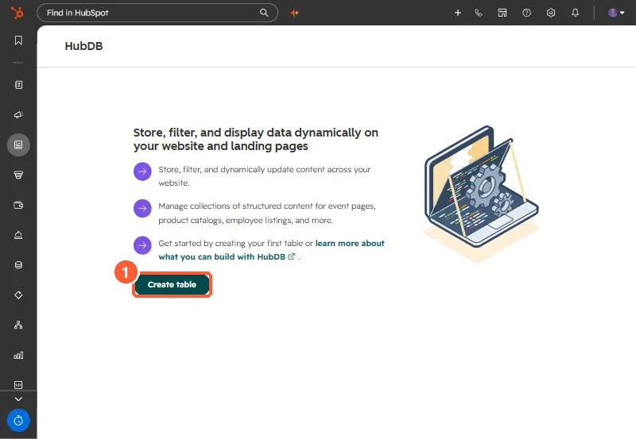

Short answer
HubDB stores structured content such as event lists, product catalogs and staff directories in tables under Content > HubDB. HubSpot's KB lists Content Hub Professional or Enterprise for dynamic pages and Marketing Hub Enterprise for programmable emails. Rows can be added by hand or imported from CSV, adding to or replacing existing rows. A data source can drive up to 10 dynamic pages.
1. Start
My demo portal has no tables yet.


2. Fill it
- Add rows with Actions > Add row.
- Import a CSV with Actions > Import, choosing Add or Replace.
3. Use it
A developer connects a template or module to the table. HubSpot then builds a listing page and a detail page per row. Each data source can power up to 10 dynamic pages, and dynamic pages built from HubDB do not appear in workflow and list filters. In programmable emails, filter rows in the query rather than by personalization token.